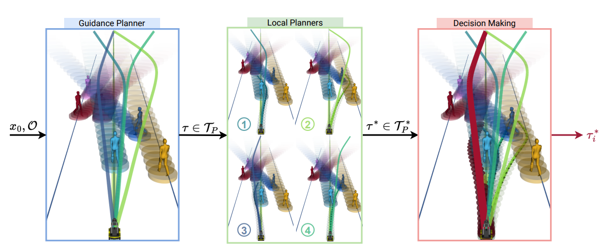
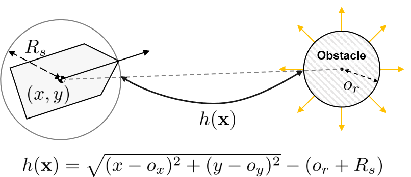
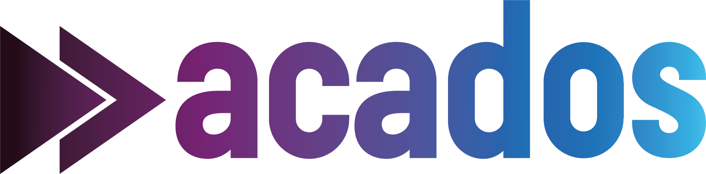
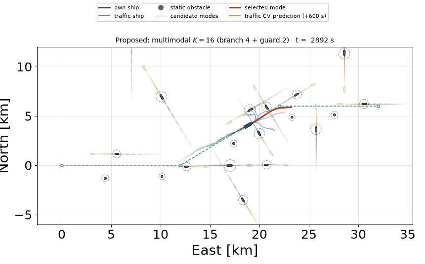
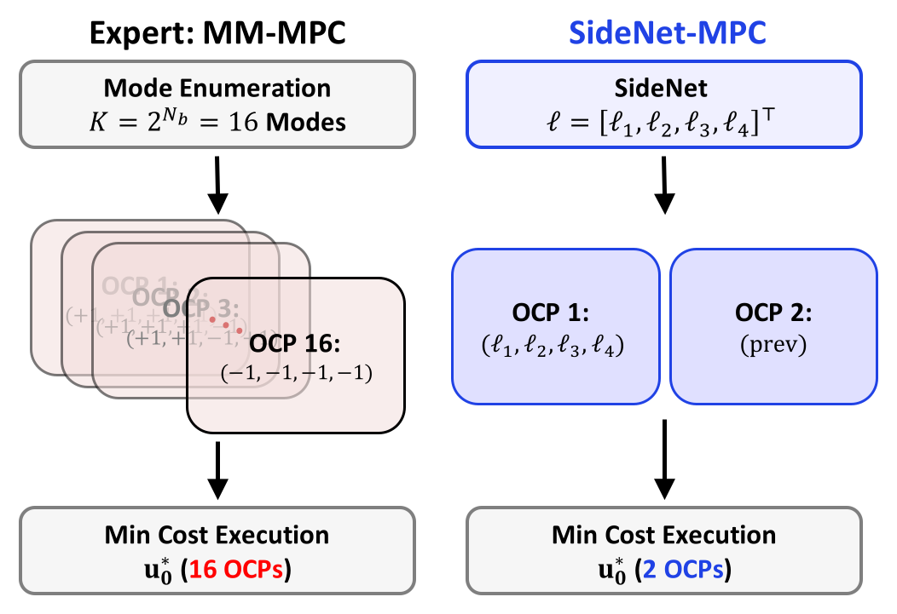
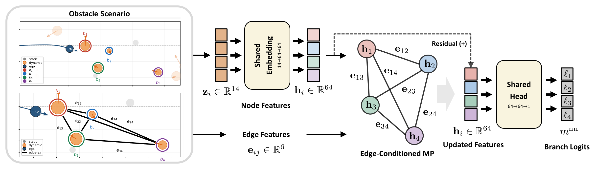

Multimodal Trajectory Planning for Surface Vehicles
using Turning Circle-based Control Barrier Functions
대표 기법인 모델 예측 제어(MPC)가 동적 장애물을 회피하며 목표에 도달할 때 겪는 두 가지 문제
단일 호모토피 클래스 안에서 최적화하므로
지역 최적해에 빠지기 쉬움
긴 예측구간을 사용하면 연산 부담이 크고,
짧으면 장애물 회피에 실패함
동일 조건에서 예측구간만 달리한 MPC 충돌회피 결과

별도의 상위 수준 가이드 경로 생성 단계 필요

거리 중심 회피로 좌·우 통과 방향 정보 부족 · 선회 한계 미반영
다수의 회피 위상을 고려하는 경로 최적화 기법
선박의 선회 능력을 반영하고 회피 방향을 지정할 수 있는 CBF
Turning Circle-based Control Barrier Function
통과 방향의 회전원 중심과 장애물 사이의 거리로 안전 여유를 정의합니다.
최대 타각에서의 정상상태 선회율로 최소 선회 반경을 계산합니다.
위치와 선수각을 기준으로 선택한 방향의 회전원 중심을 구합니다.
중심 간 거리에서 장애물·선박·회전원 반경을 빼 안전 여유를 정의합니다.
동일 초기조건에서 4개 OCP를 병렬 평가하고 최저 비용 모드를 선택
가장 가까운 선박에 대해 \(K=2^M=16\)개의 통과 방향 조합을 열거하고 병렬로 풀이
그다음으로 가까운 선박은 방위 기반 고정 통과 방향으로 모든 모드에 포함하여 탈출 기동을 보존
모든 모드는 \(N_o=6\)척을 제약에 반영하지만, 분기 대상은 4척으로 제한하여 \(K=16\)개의 OCP만 풉니다. 따라서 혼잡 해역에서도 추가 선박을 누락하지 않고 고려할 수 있습니다.
모든 모드는 \(\boldsymbol{\sigma}^{(k)}\)만 다름
코드를 한 번 생성하고 \(K\)개 인스턴스를 일괄 실행
+ HPIPM · 모드당 RTI-SQP 1회 OpenMP · 스레드 \(P=12\)이전 최적해로 warm start
예측 구간 600 s(\(T_s=20\) s, \(N=30\)단계)
세 방법은 통과 방향 결정 방식만 다르므로 위상 분기의 효과를 분리하여 비교
| 밀도 | ED-CBF (K=1) | TC-CBF 단일 (K=1) | 제안 (K=16) |
|---|---|---|---|
| D1 · 동적 8척 | t = 297 s 안전영역 침범 | t = 341 s 안전영역 침범 | 완주 · 위상 재결정 8회 · 최소 여유 60 m |
| D2 · 동적 12척 | t = 327 s 안전영역 침범 | t = 315 s 안전영역 침범 | 완주 · 위상 재결정 17회 · 최소 여유 82 m |
| D3 · 동적 16척 | t = 437 s 안전영역 침범 | t = 406 s 안전영역 침범 | 완주 · 위상 재결정 26회 · 최소 여유 92 m |

성공률[%]: 안전영역을 침범하지 않고 완주한 시행의 비율
제안: 중앙값 44 m · 300회 중 14회 위반
D3에서도 중앙값 19 m, 최댓값 106 m
주기당 연산 시간[ms] · 50회 평균(표준편차 ≤ 0.65 ms)
\(N_o=6\) 고정(Branch \(M\) + Guard \(6-M\)) · Intel Core Ultra 7 270K Plus, 24코어
직선 항로 30 km · 표적선 5척 · 정적 장애물 2기 · \(M=3\), \(K=8\) · 150배속
5개 조우에서 규칙 선호를 따르며 안전영역 침범 없이 완주
\(M=3\)(\(K=8\) 모드), Guard 3척: 5개 조우에서 규칙 선호와 일치하는 회피를 수행했으며 안전영역 침범은 발생하지 않음


Q&A